Hints of Noah's Ark in Ancient Ships
Copyright Tim Lovett Nov 2005 | Home | Menu
Clues from the Earliest Ship Designs
According to the Bible, all people on earth are descended from Noah's
three sons. The flood left nothing of previous civilizations and their
technology, so the Ark is the archetype of all ancient ships in our history
(the time since the Flood). Shipwrights tend to stick with tradition, so
when they built ancient
ships they may have included features of the original Noah's Ark. For
example;
"This projecting forefoot, evidenced as
early as the third millennium B.C., is a feature that will be
found during the whole of antiquity, on seagoing craft as
well as small boats. Its reason for being is unclear. A bifid
stem, which leaves a very similar projection at the
waterline, is characteristic of many forms of primitive
craft, skin boats, dugouts, and even planked boats.
Shipwrights, who are as conservative as seamen, may simply
have perpetuated it as a traditional feature." Casson 1
So the familiar high
stem and even the projecting forefoot may have been inherited from the first ship in our
history - Noah's Ark.
|
 Clues
from Ancient Ships. With Noah's three
sons steeped in marine technology, the emergence of a shipbuilding
industry soon after the Flood should come as
no surprise. Clues
from Ancient Ships. With Noah's three
sons steeped in marine technology, the emergence of a shipbuilding
industry soon after the Flood should come as
no surprise.
So if we
see particular traits in ancient ships, the chances are they may have
been derived from the archetype of all ships - Noah's Ark.
> See
More here
|

|
Mysterious Stern Appendage
(Note: All quotes from Casson 1 unless otherwise
stated.)
Compared to ancient construction in stone, we know relatively
little about ancient ships, especially anything prior to 2000
B.C.
- 2000 to 1500 B.C. The Minoans of Crete had an impressive
navy and merchant marine, the first can be deduced from
the total absence of fortifications about their cities,
and the second is attested by the abundant archaeological
traces of their contact with surrounding lands.
- 1500 to 1200 B.C. The Mycenaeans or Aegeans controlled
the eastern Mediterranean. Despite the widespread and
intense maritime activity of the time, we have nothing
better to go on than simplified clay models, tiny
engravings on seals, crude graffiti, and a handful of
vase-paintings.
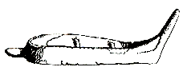
(Fig 23, Casson) Clay model from Palaikastro,
Crete. Before 3000-2000 B.C.
"The hull in a good many representations
terminates at one end in a lofty vertical or nearly vertical
post, while the other, with no upright fixture at all, trails off
into a low horizontal extension at the waterline."
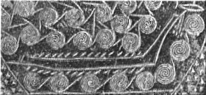
(Fig 22, Casson) Terracotta "frying
pan" from Syros, before 2000BC. Notice the waves shown
as spirals, indicative of the orbital
motion of real ocean waves.
Outline from the terracotta image above. One of the earliest
pictures of a large ship, a multi-oared galley. The Aegean craft
were not the double-ended design like the Egyptian typecast.
Casson strongly argues that the lofty stem was the prow, the
trailing appendage at the stern - exactly opposite to the (much) later
Greek warships. (See Appendix). A fish symbol appears to be mounted on a pivot
at the top of the prow, perhaps acting as a wind vane to detect wind direction
relative to the vessel. The cords or beams hanging below it are rather
mysterious, although they might conceivably act as some sort of wind catching
element..
The hull is slender, straight, and low; joining
it at a sharp, almost right-angle is a narrow and high-rising
stempost bearing at its top a fish-shaped device; the stern,
finished off equally sharply with apparently nothing more than a
vertical transom, has a needlelike projection at waterline level.
And, though the drawing is too primitive to inspire faith in the
exact number of oars shown, the clear implication is that there
was a good number. We see, in effect, a sizable swift galley
whose shape is particularly distinguished by the absence of
curves. Its descent from a dugout seems beyond question, and this
is just what we would expect in an area as well supplied with
timber as the Aegean was during the Bronze Age.
Casson asserts "beyond question" that this design is a legacy of
the dugout, yet gives little support for this theory. His only hint is the
"swift" form and an "absence of curves". In the rest of his
writings, Casson points to dugouts and reedboats as the only true ancestors of
the ship (assuming inflated skins as a developmental dead-end). Casson's
statement about the angularity of the vessel presumably excludes the reedboat as
an ancestor, leaving only one alternative - the dugout. Yet a
"primitive" dugout is no near relative of this ship. The scale (32 oars, 16 on each side), and
the shape (high stem and appendage) show a vessel about as
opposite to a dugout as one could get. With a gradual evolution of ships
in mind, the dugout is simply Casson's estimate of
a primitive origin in wood rather that reeds, but Noah's Ark
makes a more appropriate prototype.
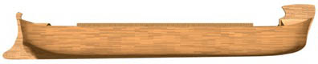
Is this where they got the idea? A proposed
Noah's Ark with the Biblical slender hull, and directional
stormkeeping afforded by a high prow and a trailing stern.
These craft reappear on a series of graffiti
that span the second millennium B.C.
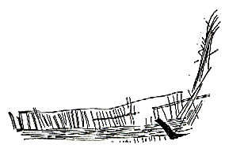
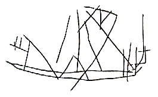
(Fig 24,27 Casson) Graffiti found on Malta,
ca. 1600 B.C, and from Cyprus, 1200-1100 B.C.
The graffito from Cyprus, reproduces every
feature of the Syros ships down to the projection at the stern.
It also includes a sail—presumably the mast was stepped and
sail stowed away in all the other representations—which is
shown bellying toward the high end. This settles once and for all
a long-standing argument about which end of these ships was the
prow. 2
We know Cretan ships almost wholly from tiny and
often stylized portrayals on seals. Despite the lack of detail,
one point seems fairly clear: the island's shipwrights went in
chiefly for rounded hulls distinguishable at a glance from the
straight-lined, angular-ended Aegean versions. In the earliest
period, before 1600 B.C. or so, the prow alone was rounded (and
finished off with a three-pronged or arrow-shaped device), and
the stern was given an appendage or bifurcation. This last
feature is a puzzle, whose solution will have to wait until more
evidence turns up. With the passage of time, as we shall see in a
moment, both ends came to be rounded.
Depictions on ancient Minoan seals dated around 2000 B.C.
also show an asymmetrical profile, a high stem at one end and low extension at
the other. While the illustrations are to a certain extent symbolic, the
repetition of certain details adds credibility to the depictions. For example,
the lofty stem has a forked appearance, something akin to the raised stem of the
Greek triremes some 1500 years later. Contrary to the theory linking these early
ships with the much later Greek trireme with its ramming bow, there was an
extended intervening period when ships were rounded at both ends.
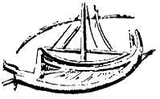
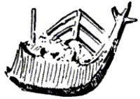
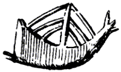
Minoan seals, ca. 2000 BC, edited from Casson figures 34,35.
Casson claims the the first figure shows the high end as prow; (See Appendix).
Cretan vessels around 1500 B.C. had a prominent prow and stern,
both devoid of any ornamental device. It is very clear that the
origin of so called "ornamental" stems was not
ornamental at all. They appear to have have been there for a reason, such as
passive stormkeeping effected by catching the wind at one end.
The clay models that have been preserved, from
Cyprus and Melos and other islands as well as Crete, seem to show
small craft. The most significant are a few which have a distinct
projection where the stempost joins keel (occasionally where
stern-post joins keel as well)... This projecting forefoot,
evidenced as early as the third millennium B.C., is a feature
that will be found during the whole of antiquity, on seagoing
craft as well as small boats. Its reason for being is unclear. A
bifid stem, which leaves a very similar projection at the
waterline, is characteristic of many forms of primitive craft,
skin boats, dugouts, and even planked boats. Shipwrights, who are
as conservative as seamen, may simply have perpetuated it as a
traditional feature.
(Fig 54, Casson) Small craft with bifid stem - projecting
forefoot together with a raised stem. Clay model from Mochlos "2700-2500"BC
Scant as it is, the evidence unmistakably
reveals the second millennium B.C. as a crucial period for
Mediterranean maritime history. It witnessed the development of
the true seagoing ship, both galley and sailing craft, built with
some system of internal bracing.(...) The Aegean produced a hull
design distinguished by straight lines, angled ends, and a lofty
prow; this, brought further along by the Bronze Age Greeks,
served as prototype for the later Greek warship and very possibly
the merchantman.
Thera Fresco
One of the best examples of the stern appendage is found in the 13th-century
BC fresco from the island of Thera (Santorini, 60 miles from Crete). The
extended feature is clearly stern. Interestingly, these illustrations seem to indicate the feature was
added to the hull. The stem is long and slender with mysterious objects
attached, similar to the Aegean "frying pan ship". If a storm wind
came against the side of the vessel, the stem would catch the wind while the
stern appendage drags in the water, turning the vessel around until the stern
points into the waves.
|
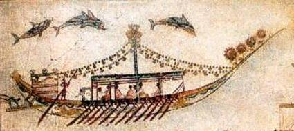
|
The Thera ships have one other interesting feature, namely the flat
projection extending outwards from the stern just above the supposed waterline
level. This has been the subject of considerable scholarly debate both in terms
of the relationship between the Thera ships and other contemporary ships known
to exist on the same area. and of the function of the stern projection on the
ships themselves. (J.S. Illsley 8)
|
Egyptian ships are assumed to follow a reed-boat
form - curved up at both bow and stern often with each end tied with a rope over the
mast to counter hogging. Even after they began importing timber to build boats in
wood, the Egyptian form remained relatively distinct, with a gradual upturn at
each end. In Egypt, a "reed-boat" shape does not preclude wood as a building
material.
|
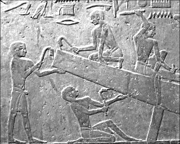
|
Egyptian craftsmen shaping a wooden ship, the form apparently inherited from
their reed boats.
|
Designed for a Seakeeping Function
If other nations supposedly used a ramming bow in those early years,
why not Egypt? 6
Noah's Ark remembered in China
In China, the same worldwide flood described in Genesis was
remembered in the ancient Book of Documents (Shu Jing), written around 1000 B.C.
The main character in the legend is Nuwa, who escaped a flood where "the
heavens were broken, the nine states of China experienced continental shift and
were split, and water flooded mountains and drowned all living things." 7
While the story is one of countless flood legends around the globe, the Chinese
have even more clues contained in their ancient characters.
One of the better known is the Chinese symbol for ship (large
boat), being the combination of symbols for boat, eight and mouth (or person to
feed). In other words, a concept of a large boat originated with the famous
eight-person boat, Noah's Ark. Following images from Voo K.S (TJ 2005).
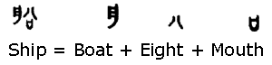
The is a similarity between the asymmetrical shape of the
Chinese boat symbol and the depictions from the Mediterranean around 2000 B.C.
There is no "ramming bow" argument in this part of the world, so why
is the Chinese boat so obviously high on one and and low on the other?
The following undated forms of the character for boat or ship
show some more asymmetrical profiles. These bronzeware characters are
"probably the side view of a boat with a roof" (from 15, fig 3).
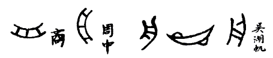
It appears the third symbol became the default representation
for "boat", which is not the familiar equal-ended Noah's Ark depiction. The most
interesting symbol is the fourth one;
A side (profile) view of a pointed hull with protrusions on
either end - perhaps one to catch the water and the other to catch the wind.
Such as arrangement could create the self-steering effect on a drifting ship to
keep it riding through waves instead of being trapped side-on (broaching to a
beam sea). Although this may appear to be reading a lot into one small Chinese
symbol, the anti-symmetry of bow and stern is otherwise mysterious in these
early depictions.
A high prow and trailing stern already makes perfect sense for a drifting
ship designed to handle wind generated seas, so the hint of asymmetrical bow and
stern depicted in the earliest ships reinforces the case for a wind-steered
Noah's Ark.
The hull in a good many representations
terminates at one end in a lofty vertical or nearly vertical
post, while the other, with no upright fixture at all, trails off
into a low horizontal extension at the waterline.
This evidence is hardly debated, but one question remains; Which end is the
front (prow)? Casson believes the high end is the prow, exactly the opposite to
the (much) later design of the bow ram seen on Greek warships. Other
commentators conclude the horizontal extension was the forerunner of the ramming
bow, but Casson argues the original depictions show otherwise. He highlights the
controversy as follows;
Some take the
high end for the prow, some the low.3 To complicate matters,
those who take the low end for the prow see in the horizontal
extension the earliest form of that naval weapon par excellence
of the ancient world, the ram.4 Though there were enough clues to
have settled the question long ago,5 new evidence (the lead
models and Fig. 27; cf. 31 above) provides an incontrovertible
answer: it is the high end that is the prow. With this
established, the argument for the ram at this period ceases to exist. The horizontal extension still needs explaining, but,
until conclusive evidence turns up, little is gained by guessing.
Return to text
References
1. Casson, L., Ships and
Seamanship in the Ancient World, Princeton Univ. Press, 1971
Revised 1995 John Hopkins Univ. Press. Ch3 Return
to text
The following references 2 - 6 and comments by Casson (simplified);
2. Lead models found on Naxos, show the low
end, finished off in a sort of transom, as the stern, and the
high end, coming to a point, as the prow. C. Renfrew, "Cycladic Metallurgy and the
Aegean Early Bronze Age," AJA 71 (1967) pp1-20, esp. 5, 18. Return
to text
3 Earlier commentators who view the low end as the prow; Miltner
F., Seewesen in RE, Supplementband v, (1931) p906, ; Marinatos S.,
"La marine creto-mycenienne," BCH 57 (1933) pp182-183, 125-27. Return
to text
4 This opinion, flourishing for a while (cf.
Marinatos 183), then rejected (Marinatos 183, note 4; Miltner
906), has been revived by Kirk G., "Ships on Geometric Vases," BSA 44
(1949) pp125-127 and is back in the
handbooks (cf., e.g., F. Matz, Kreta, Mykene, Troja, Stuttgart
1956, p. 77). See also note 6 below. Return
to text
5 For one, to take the low end as prow means
that the fish emblem points backward, which goes
not only contrary to sense but to the location of the emblem on
the one example we have where prow and stern are indisputable. For another, high prow and low stern are
characteristic of early craft (see Evans, Palace of Minos n
240-41), which is why the specialists see no problem (cf., e.g.,
C. Hawkes, The Prehistoric Foundations of Europe, London 1940, p.
156; Behn in M. Ebert, Reallexikon der Vorgeschichte XI 240
[1927]; Woolner, op. cit. 63). Among those who take the low end
as prow, only Marinates has studied the question comprehensively,
and behind his conclusion lie inconsistencies and inconclusive
statistics; see L. Cohen, "Evidence for the Ram in the
Minoan Period," AJA 42 (1938) 486-94, esp. 489, notes 7, 8. Return
to text
6 Kirk (125-27) simply accepts Marinatos'
conclusion that the low end is the prow, making no effort to
improve on the arguments, and holds that the projections were at
first structural but then soon became a ram. That neither Homer nor the Peoples of the Sea knew anything of
the ram he explains by assuming that the ships
involved were all merchantmen. This posits a distinction between
oared merchant vessels and warships which is not only unproven
but most unlikely at this age. And what of the Egyptian ships
shown attacking the Peoples of the Sea (Fig. 61)—fighting
craft pure and simple, yet with no ram? If the ram was known in
the Bronze Age, the Egyptians would necessarily have adopted it,
for it was a weapon like the naval gun—once one fleet had
it, all had to have it. Return
to text
7. Voo K.S., Sheeley R., Hovee, L.D., Noah's Ark hidden
in the ancient Chinese characters, TJ 19(2): 96-108, 2005. Return
to text
8. From History and Archaeology of the Ship http://www.arch.soton.ac.uk/Prospectus/CMA/HistShip/index.htm.
The Centre for Maritime Archaeology, Department
of Archaeology at the University of
Southampton. Return
to text
www.worldwideflood.com
{kind=link}